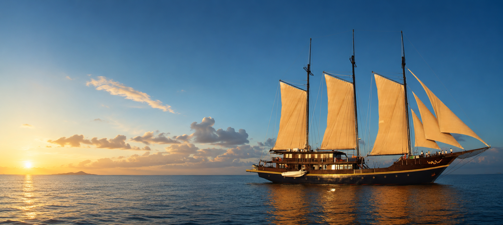
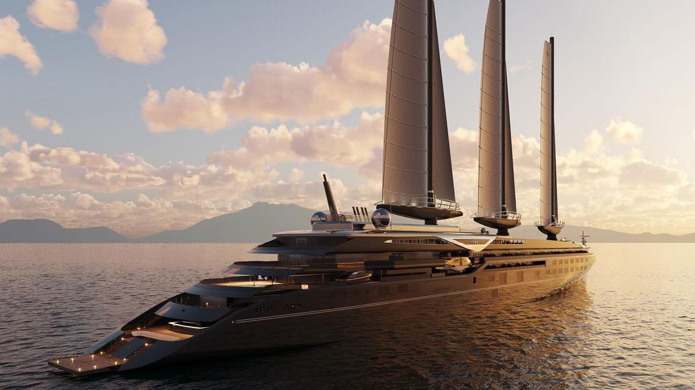

Keel Laid at Tanjung Bira
Un moment fondateur pour WAOW : la quille repose désormais sur la plage, prête à recevoir sa première membrure.
Read more →
West Papua
La biodiversité marine la plus riche de la planète. Raies manta, requins-baleines et murs de corail à couper le souffle.
Learn more →West Papua
Le plus grand parc marin national d'Indonésie, où les requins-baleines se rassemblent toute l'année.
Learn more →North Sulawesi
La capitale mondiale du muck diving. Un paysage sous-marin surréaliste peuplé de créatures rares.
Learn more →North Sulawesi
« Les perles du Nord » — l'une des dernières frontières inexplorées d'Indonésie, sans foule de plongeurs.
Learn more →Construction
WAOW prend forme aux chantiers navals de Tanjung Bira, Sulawesi — berceau du Phinisi indonésien depuis six générations de charpentiers Konjo. Faites défiler pour suivre chaque étape, de la quille à la mer.

CompleteLes lignes de coque finalisées, chaque courbe pensée pour la performance et le confort en haute mer.
La quille repose désormais sur la plage de Tanjung Bira, prête à recevoir sa première membrure.
Membrures et bordé en cours d'assemblage par les charpentiers Konjo, planche après planche.
Pose des mâts, du pont supérieur et des espaces de vie extérieurs.
Aménagement des cabines, du salon et des espaces de bien-être à bord.
Essais en mer, puis mise à l'eau officielle à Tanjung Bira.
Scroll to explore the build →
The Team
Founder & Visionary
Il a rêvé de ce bateau si intensément, si obstinément, qu'il ne pouvait plus dormir — jusqu'à donner vie à WAOW. L'âme du projet, et sa force motrice.
Co-Founder & Operations
Après 18 ans en tant que Key Account Manager et Directrice de Projet dans l'industrie, Julia a tout quitté pour rejoindre le projet le plus exigeant — et le plus beau — de sa vie.
Director — PT WAOW Charters, Bali
Le globe-trotter des océans et de la vie. L'un des plus jeunes instructeurs de plongée à 20 ans en 1988, Andrew a passé sa vie à naviguer entre continents et sites de plongée.
Cruise Director
Né en Suisse, vivant en Indonésie depuis 2005. Parlant couramment français, allemand, anglais et indonésien — Reto est le pont entre les mondes, à bord et sous l'eau.
Indonesian Relations
La bonne fée indonésienne de WAOW. La personne qui a toujours su ouvrir des portes que personne d'autre ne pouvait ouvrir. Un pont irremplaçable vers le monde local.
Dive Travel Expert
Plus de 20 ans en tant que spécialiste du voyage de plongée, travaillant avec des tour-opérateurs en France et en Suisse, toujours à la recherche des plus beaux spots de la planète.
Pre-Sale
Rejoindre le Cercle Fondateur, c'est réserver bien plus qu'une cabine : c'est inscrire son nom sur la plaque de plankowner de WAOW, verrouiller le tarif de lancement, et embarquer en priorité absolue lors de la traversée inaugurale.
Places limitées par croisière. Rejoignez la liste d'attente pour la pré-vente et bénéficiez des tarifs early bird avant le lancement officiel.
News & Events
Un moment fondateur pour WAOW : la quille repose désormais sur la plage, prête à recevoir sa première membrure.
Read more →Huit jours à travers les murs de corail les plus riches de la planète, dévoilés en exclusivité.
Read more →Un nombre limité de cabines à tarif de lancement, réservées aux tout premiers membres du projet.
Read more →Six générations de savoir-faire transmis à la main, au cœur du chantier de Tanjung Bira.
Read more →Le plus grand parc marin d'Indonésie s'apprête à accueillir sa saison de requins-baleines.
Read more →Les tarifs de lancement 2026 seront verrouillés pour les membres fondateurs jusqu'à fin d'année.
Read more →Ready to dive?
Places limitées par croisière. Rejoignez la liste d'attente pour la pré-vente et bénéficiez des tarifs early bird.